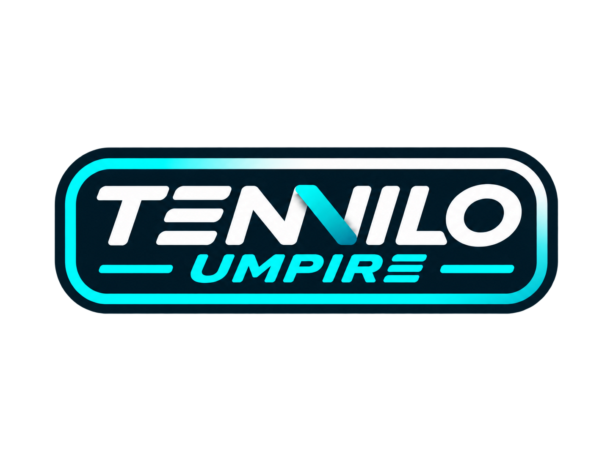

Diese Anzeige aktualisiert sich bisher nur innerhalb desselben Browserprofils. Der unabhängige Zweitgeräte-Modus ist noch nicht verfügbar.
SPIELERSÄTZESPIELEPUNKTE
Spieler A000
Spieler B000

ANZEIGETAFEL · LOKALE VORSCHAUDiese Anzeige aktualisiert sich bisher nur innerhalb desselben Browserprofils. Der unabhängige Zweitgeräte-Modus ist noch nicht verfügbar.